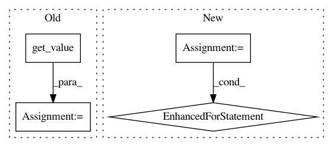

dd5ce45d6d03a2ff00b0792c084e13e717a81311,brian2/core/network.py,Network,run,#Network#Any#Any#Any#Any#Any#Any#,887
Before Change
// to avoid expensive access during the run loop
if single_clock:
clock = list(self._clocks)[0]
self._clock_variables = (clock.variables["timestep"].get_value(),
clock.variables["t"].get_value(),
clock.variables["dt"].get_value())
clock.set_interval(self.t, t_end)
else:
self._clock_variables = {c : (c.variables["timestep"].get_value(),
c.variables["t"].get_value(),
After Change
obj.run()
profiling_info[obj.name] += (time.time() - obj_time)
else:
for obj in active_objects:
if obj._clock in curclocks:
obj.run()
for c in curclocks:
timestep, t, dt = self._clock_variables[c]
timestep[0] += 1
t[0] = timestep[0] * dt[0]
In pattern: SUPERPATTERN
Frequency: 3
Non-data size: 4
Instances
Project Name: brian-team/brian2
Commit Name: dd5ce45d6d03a2ff00b0792c084e13e717a81311
Time: 2017-08-31
Author: marcel.stimberg@inserm.fr
File Name: brian2/core/network.py
Class Name: Network
Method Name: run
Project Name: SpiNNakerManchester/sPyNNaker
Commit Name: 6a968dc9a3faad2037bfd1a8f12b038a368eee4d
Time: 2018-02-20
Author: christian.brenninkmeijer@manchester.ac.uk
File Name: spynnaker/pyNN/models/neuron/abstract_population_vertex.py
Class Name: AbstractPopulationVertex
Method Name: initial_values
Project Name: brian-team/brian2
Commit Name: dd5ce45d6d03a2ff00b0792c084e13e717a81311
Time: 2017-08-31
Author: marcel.stimberg@inserm.fr
File Name: brian2/core/network.py
Class Name: Network
Method Name: run
Project Name: senarvi/theanolm
Commit Name: 360ed9d9b6a8f25e8ec1302b523ca3dcc97c6f02
Time: 2016-12-06
Author: seppo.git@marjaniemi.com
File Name: theanolm/network/network.py
Class Name: Network
Method Name: get_state